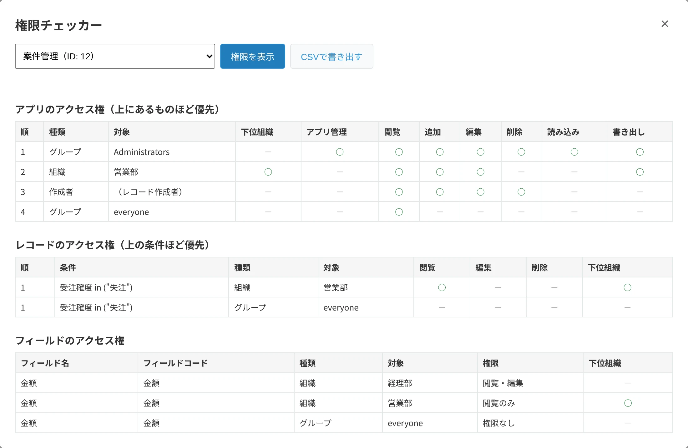

権限チェッカー
アプリの権限を、1つの表に。
kintoneの権限は「アプリ」「レコード」「フィールド」の3か所に分かれています。権限チェッカーは、この3つを1画面にまとめて表示し、そのままExcelやCSVに保存できます。
- 無料・人数制限なし
- 保存：Excel・CSV
- データは外部に送信しません


こんなときに
- 監査や社内の点検で、アプリの権限の一覧を出すように言われた
- 「この項目は誰が見られるのか」を聞かれ、3つの設定画面を行き来して確かめている
- 担当者の交代で、いまの権限の設定を資料にして引き継ぎたい
できること
- アプリ・レコード・フィールドのアクセス権を、1画面に並べて表示
- kintoneが判定する順番（上の行ほど優先）のまま表示
- 画面上でアプリを切り替えて、ほかのアプリの権限も確認
- ExcelとCSVで保存。Excelには資料の名前・kintoneの環境・作成日時と、結果のまとめの1文が入り、見出し行の固定・フィルター・A4横の印刷設定が付きます
使い方
- ボタンを押すアプリの一覧画面の上にある「権限チェッカー」を押します。
- アプリを選ぶ調べるアプリを選んで「権限を表示」を押すと、3つの表が出ます。
- 保存する「Excelで保存」で、権限一覧_アプリ名_日付.xlsx が保存されます。
導入方法
- 下の「ダウンロード」から、プラグインのファイル（zip）を保存します。zipは展開せず、そのまま使います。
- kintoneの歯車アイコンから「kintoneシステム管理」を開き、「プラグイン」の「読み込む」でファイルを読み込みます。
- どれか1つのアプリの「アプリの設定」→「プラグイン」で「台帳屋 権限チェッカー」を追加し、「アプリを更新」を押します。
- 一覧画面の上に「権限チェッカー」ボタンが出ます。1つのアプリに追加すれば、ほかのアプリの権限も確認できます。
動作環境
| 対応コース | スタンダードコース・ワイドコース |
|---|---|
| 導入する人 | kintoneシステム管理者 |
| 利用する人 | 確認したいアプリの管理権限を持つユーザー |
| 画面 | パソコン版の一覧画面（動作確認はGoogle Chrome） |
| 通信と書き込み | kintone環境とのみ通信し、設定やレコードは変更しません（導入前の確認事項） |
ダウンロード
ダウンロード（v1.2.0・zip・16KB）
ファイルの確認用（SHA-256）：83fb30298facc0025cd6074f78176f9b15d12d3fc4c73b0f68e315a4b0cdcb8b
ご利用の前に利用規約をお読みください。
困ったときは
- 「そのアプリの管理権限が必要です」と表示される場合は、そのアプリの管理権限を持つユーザーが操作してください。
- ゲストスペースのアプリには、現在対応していません。
- ユーザー・組織・グループは、表示名ではなくコードで表示されます。
- そのほかの不具合やご要望は、daichoya.plugins@gmail.com までお知らせください。
- 関連するガイド：kintoneのアクセス権を一覧で確認する方法
更新履歴
1.2.0（2026年11月6日）：Excelの先頭に、結果のまとめの1文（アプリ・レコード・フィールドのアクセス権の件数と、Everyoneに「アプリ管理」があるか）を入れました。
以前の更新
- 1.1.0（2026年11月5日）：「Excelで保存」を追加しました。資料の名前・kintoneの環境・作成日時入りで、見出し行の固定・フィルター・A4の印刷設定が付きます。
- 1.0.2（2026年11月5日）：画面の下のご案内を、この環境のアプリの数と、全アプリを無料で点検できる「棚卸し・変更監視パック」へのご案内に変えました。機能の変更はありません。
- 1.0.1（2026年11月5日）：画面の下に、有料版（棚卸し・変更監視パック）のご案内を1行加えました。機能の変更はありません。
- 1.0.0（2026年11月5日）：最初の公開版